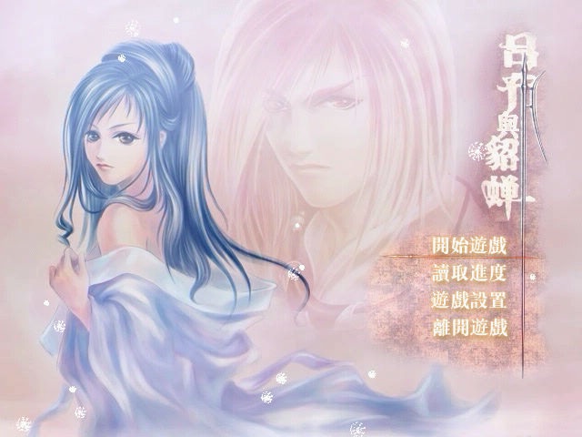
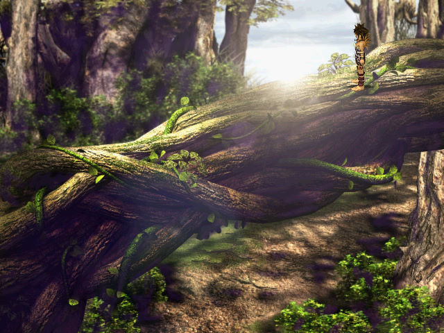
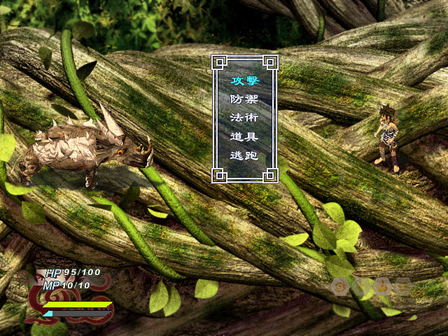

名稱：呂布與貂蟬 (中文版)
簡介：新瑞獅2003年出品的角色扮演遊戲，由遊戲精靈代理發行，以3D斜角畫面呈現，採團
隊回合制方式戰鬥 [待補]。



保護：光碟（第三片CG片），破解碼：
game.exe
75 18 3B FB 75 14
90 90 -- -- 90 90
74 45 6A 01
EB -- -- --
備註：執行時，不能有任何標題為［呂布與貂蟬］的視窗，無法無法啟動。
備註：進入遊戲後，若畫面色彩破圖或不正確，請將螢幕解析度改成16位元色彩。